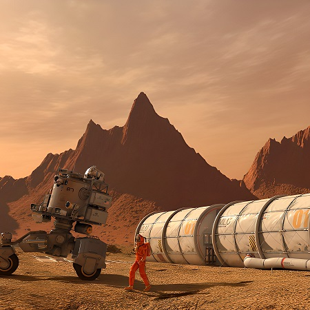

Programas de colonización de Marte
-

Programa de investigación
El programa de investigación está dedicado a la evolución de colonias y la recopilación de datos.
inscribirse -

Programa de Trabajo
El programa de trabajo para desarrollar mejoras continuas en capacidades técnicas y robóticas.
inscribirse -

Programa de Colonización
El programa de Colonización establecer una colonia en Marte para el crecimiento demográfico y la exploración del planeta.
inscribirse